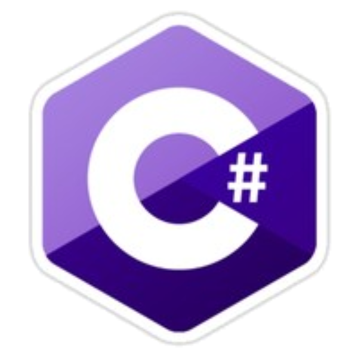

Members of the C Family
Home
C
C++
C#

Advantages
Disadvantages
Object-oriented with simplified syntax
Much less flexible than C and C++
Excellent type safety
Library is complex and extensive
Exceptionally powerful through the .NET platform
Slower than its predecessors